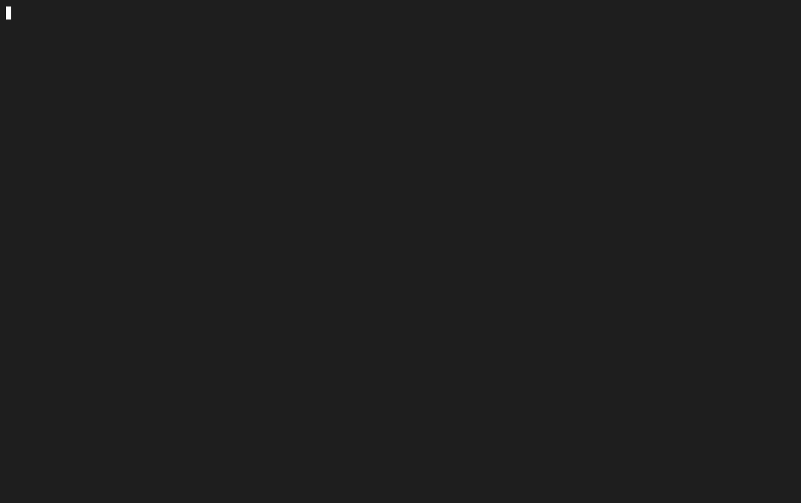

Yubi Documentation
Biomechanical touch-typing trainer and real-time sensory biofeedback engine built natively in 100% Rust and Ratatui.
Yubi is engineered to eliminate cognitive hesitation latencies and systematically transition typists from conscious finger reaches to automatic neuromuscular reflex loops. Running entirely inside your terminal with sub-millisecond execution times, zero browser overhead, and zero telemetry, all typing metrics, bigram hesitation records, and progression curves are computed and stored purely on local disk.
To run Yubi immediately with a single command on any Linux, macOS, or WSL environment:
curl -fsSL https://raw.githubusercontent.com/temesgensida-code/yubi/main/install.sh | bash
2. Biomechanical Speed Acceleration
Traditional typing tutors measure gross WPM and net accuracy as post-round aggregates. Yubi treats typing as continuous neuromuscular motor control, monitoring velocity benchmarks, microsecond latencies, and finger movement patterns in real time.
Ghost Pacer & Real-Time Delta
A visual velocity cursor glides character-by-character through the target text at your target pace or personal best WPM. The practice interface displays an active delta badge showing your instantaneous lead or lag:
- Pacer Target Modes: Configurable benchmarks at 40, 60, 80, 100, 120, 140 WPM, or dynamic Personal Best (
pb) computed from your historical records for the active level and mode. - Lead / Lag Delta Badge: Live differential display (e.g.,
▲ +6.4 WPMwhen ahead of target,▼ -3.2 WPMwhen falling behind). - Glide Synchronization: Smooth interpolation synchronized with microsecond precision timers to maintain a uniform visual target across all terminal refresh rates.
Burst & Timed Sprint Engine
Typing ceilings are established during brief periods of maximum neuromuscular firing before physical fatigue degrades motor precision. Yubi provides dedicated sprint configurations to expand speed ceilings:
- 5-Word Micro-Bursts: Ultra-short rounds focused on instantaneous lexical retrieval and high-speed motor execution.
- Countdown Sprints (15s, 30s, 60s): Timed practice blocks with continuous text streaming. As you type through the visible buffer, lines replenish dynamically to ensure uninterrupted typing flow.
- Stepping Ladder: Post-round debrief options allow typists to step target pace upward in +5 WPM increments upon meeting accuracy criteria.
Inter-Key Interval (IKI) Hesitation Tracking
Every keystroke transition is timed to the microsecond. The latency formula measures the exact delta between the release of character n-1 and the press of character n:
T_latency = t_n - t_(n-1)The engine analyzes and categorizes every key transition into one of three biomechanical transition classes:
- Alternating Hands: Keystrokes alternating between left and right hands (e.g.,
ffollowed byj). Mechanically fastest as one hand prepares while the other strikes. - Same-Hand Rolls: Keystrokes executed by adjacent fingers on the same hand (e.g.,
dfollowed bye). Fluid inward or outward rolling motions. - Same-Finger Leaps: Successive keystrokes requiring the identical finger to jump across row tiers (e.g.,
ctoewith the left middle finger). Primary source of mechanical bottlenecks and hesitation spikes.
3. Real-Time Sensory Biofeedback
To prevent typists from looking down at physical keys and to build spatial finger awareness, Yubi renders immediate, in-terminal visual feedback on every stroke.
Live ASCII / Unicode Keyboard & Thermal Error Glow
An interactive keyboard matrix rendered below the text buffer tracks physical finger positions and key activations in real time:
- Tactile Home-Row Anchors: Permanent anchor guides for
FandJhome-row index fingers. - Opposite-Hand Shift Chording: When typing uppercase characters or symbols requiring Shift, the corresponding opposite-hand Shift key glows to enforce proper ergonomic bi-manual chording.
- Thermal Error Decay: Erroneously struck keys trigger a thermal glow with an instantaneous heat increment:
The heat value decays exponentially over successive frames, providing persistent visual awareness of recurring mistake clusters without interrupting practice.H_k = min(1.0, H_k + 0.4)
Cadence & Rhythm Metronome
Consistent keystroke cadence prevents stuttering and premature fatigue. The cadence engine calculates the rolling coefficient of variation (CV) across your last 10 keystroke intervals:
CV = standard_deviation(IKI) / mean(IKI)A live consistency meter categorizes typing rhythm into three operational flow states:
- Locked / Steady Flow: Smooth, evenly spaced strokes producing minimal cognitive strain.
- Moderate Variation: Minor micro-pauses between unfamiliar syllables or symbol transitions.
- Hesitation Spike: Abrupt pauses exceeding 3× median latency, indicating hesitation or lexical searching.
Instant Replay Post-Round Debrief
Upon completing any practice round, Yubi immediately displays a comprehensive post-round debrief screen:
- Keystroke Velocity Timeline: Braille-based continuous speed curve mapping your instantaneous pace across the entire passage.
- Slowest Bigram Table: Top 5 slowest two-character transitions with average latency in milliseconds and finger movement classifications.
- Weakest Finger Identification: Identifies the finger with the highest error rate or latency drag.
- One-Touch Action Shortcuts: Press r to retry the exact same passage to reinforce motor pathways, or w to automatically generate an isolation drill targeting your weakest finger.
4. Native In-Terminal Analytics Suite
Yubi includes a comprehensive 5-tab diagnostics dashboard built entirely with Ratatui widgets. No external web server, no browser, and no CSV export pipelines are required; all historical records are rendered natively inside the terminal.
Tab 1: Trends & Continuous Braille Curves
High-resolution Braille canvas charts graphing historical speed (WPM) and accuracy (%) progression over your last 30 practice sessions. A 90% benchmark target guide line is drawn across the canvas to provide a persistent accuracy threshold.
Tab 2: Keyboard Heatmap & Interactive Key Inspector
Full keyboard matrix navigatable with arrow keys (← → ↑ ↓). Pressing h cycles the color-graded metric mode:
- Accuracy Mode: Percentage of correct strikes for each individual key.
- Error Count Mode: Absolute error counts per key, highlighting problem keys.
- Load Share Mode: Percentage of total keystrokes handled by each key.
Tab 3: Biomechanical Finger Load Balance
Comparative horizontal bar meters analyzing workload distribution, latency index, and accuracy across all 10 fingers:
- Workload share percentage per finger relative to total session volume.
- Average transition latency index per finger.
- Left vs. Right hand symmetry evaluation to identify hand imbalance or asymmetrical muscle strain.
Tab 4: Level & Mode Performance Matrices
Side-by-side comparative breakdowns contrasting performance across difficulty levels (Beginner, Intermediate, Advanced) and round lengths (Word Bursts vs. Timed Sprints).
Tab 5: Session History Log
A scrollable, paginated chronological table detailing every completed round. Each row includes timestamp, duration, WPM, accuracy %, stroke volume, error count, median IKI, and rhythm consistency score.
Slicing Filter Engine
All dashboard tabs support dynamic, instantaneous filtering without reloading or recomputing from scratch:
- t: Cycle Time Filter (All Time → Past 7 Days → Past 30 Days).
- l: Cycle Difficulty Level (All → Beginner → Intermediate → Advanced).
- m: Cycle Practice Mode (All → Standard Paragraphs → Word Bursts → Timed Sprints).
5. Specialized Training Drills & Content
In addition to standard natural language paragraphs, Yubi provides targeted curriculum engines to eliminate specific motor hesitations and develop coding fluency.
Bigram Hesitation Ladder
The bigram engine identifies transitions where your measured IKI latency is significantly higher than your baseline average, and generates an automated 3-tier progressive drill:
- Tier 1 (Isolation): Repetitive bigram pulses with rhythm variation (e.g.,
qu qu qui que squ qua qu). - Tier 2 (Targeted Words): Vocabulary containing the target transition (e.g.,
quick queen equal square liquid). - Tier 3 (Sentence Context): Coherent sentences contextualizing the transition (e.g.,
The quick queen required quiet squares.).
Developer Syntax / Code Mode
Curated programming exercises targeting language-specific keywords, naming conventions, and syntax punctuation:
- Rust Idioms: Pattern matching (
match,Some,Result), lifetime annotations, generics, and standard traits. - TypeScript & Python: Async/await syntax, arrow functions, dataclasses, decorators, and list comprehensions.
- Synthetic Symbol Sprints: Focused punctuation drills isolating programming brackets and operators (
{},(),[],=>,->,::,!=,&&,||).
Configurable Paragraph Lengths
Typists can select practice paragraph lengths from 5 words up to 60 words (5w, 10w, 15w, 20w, 30w, 40w, 50w, 60w). Paragraphs are constructed with intelligent multi-sentence chaining and natural terminal punctuation. In the TUI, active lines automatically scroll vertically to remain centered in the viewport.
6. Ergonomics & Layout Customization
Multi-Layout Support
The engine includes native key attribution and finger mapping for popular alternative keyboard layouts:
- QWERTY: Standard baseline layout.
- Colemak & Colemak-DH: Modern ergonomic layout optimized for home-row rolling.
- Dvorak: Vowel-clustered layout maximizing alternating-hand strokes.
Spacebar Thumb Selection
Configurable thumb attribution for spacebar actuation:
- Right Thumb (Default): Attributes all spacebar strokes to the right thumb.
- Left Thumb: Attributes all spacebar strokes to the left thumb.
- Auto-Alternating: Dynamically attributes the spacebar to the opposite hand of the preceding keystroke to encourage ergonomic hand alternation.
Editor-Grade Shortcuts
- Ctrl+Backspace / Ctrl+W: Fast delete preceding word without mashing single backspaces.
- Ctrl+R: Instant round restart with freshly generated text without returning to setup.
Color Theme Engine
Pressing F2 on any screen cycles the visual palette instantly: Catppuccin Mocha, Tokyo Night, Nord, Gruvbox Dark, and Yubi Classic.
7. Keyboard Shortcuts Reference
| Context | Key Combination | Action / Description |
|---|---|---|
| Setup Screen | ↑ ↓ / Tab | Navigate settings field (Level, Mode, Length, Layout, Thumb, Pacer) |
| Setup Screen | ← → | Cycle setting options |
| Setup Screen | Enter | Launch typing practice round |
| Setup Screen | F2 | Cycle color theme |
| Setup Screen | Esc | Quit Yubi |
| Practice Round | Printable Characters | Type expected character |
| Practice Round | Backspace | Delete last mistyped character |
| Practice Round | Ctrl+W / Ctrl+Backspace | Fast delete preceding word |
| Practice Round | Ctrl+R | Restart round with fresh text |
| Practice Round | F2 | Cycle color theme on the fly |
| Practice Round | Esc | Abort round and return to Setup |
| Debrief Replay | r | Retry same passage immediately to reinforce motor pathways |
| Debrief Replay | w | Launch custom drill targeting your weakest finger |
| Debrief Replay | Enter | Advance to next round with current configuration |
| Debrief Replay | Tab | Open in-terminal Performance Dashboard |
| Debrief Replay | Esc | Return to Setup screen |
| Dashboard | 1 – 5 | Switch directly to Tab 1–5 |
| Dashboard | Tab / Shift+Tab | Cycle next / previous dashboard tab |
| Dashboard | t | Cycle Time Filter (All Time → Past 7 Days → Past 30 Days) |
| Dashboard | l / m | Cycle Difficulty Level & Practice Mode filters |
| Dashboard | h | Cycle Heatmap Mode (Accuracy → Error Count → Load Share) |
| Dashboard | ← → ↑ ↓ | Inspect individual keys on Tab 2 Heatmap |
| Dashboard | ↑ ↓ / PgUp PgDn | Scroll session history table on Tab 5 |
| Dashboard | r / Esc | Return to Setup screen / Exit dashboard |
8. Installation & Setup
Yubi requires no runtime dependencies, no web browser, and no background daemon. It runs natively in Linux, macOS, and Windows Subsystem for Linux (WSL).
Method 1: Single-Run Script (Recommended)
Downloads, verifies, and runs Yubi directly inside your terminal with a single command:
curl -fsSL https://raw.githubusercontent.com/temesgensida-code/yubi/main/install.sh | bashMethod 2: Build from Source
Clone the Git repository and compile with Rust 1.75+ toolchain:
git clone https://github.com/temesgensida-code/yubi.git
cd yubi
cargo run --releaseMethod 3: Install Binary to Cargo Path
Compiles and places the yubi executable into your ~/.cargo/bin directory for global terminal access:
git clone https://github.com/temesgensida-code/yubi.git
cd yubi
cargo install --path .Automated Test Suite Verification
To run Yubi's complete unit and regression test suite:
cargo test